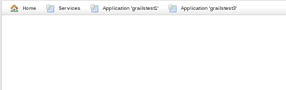
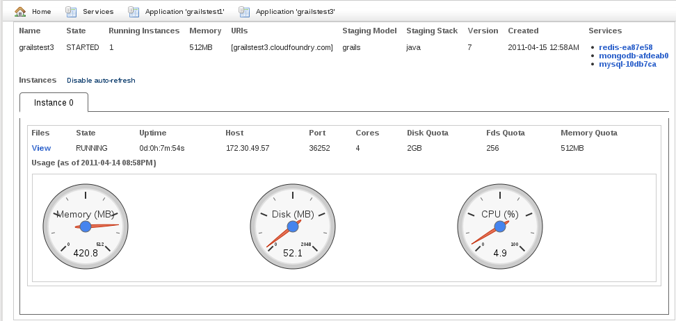
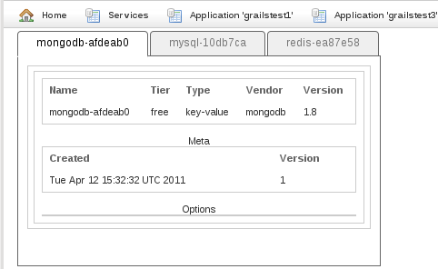

Cloud Foundry UI Plugin - Reference Documentation
Authors: Burt Beckwith
Version: 1.1
Table of Contents
1 Introduction to the Cloud Foundry UI Plugin
The Cloud Foundry UI plugin provides a simple monitoring UI for your applications deployed to Cloud Foundry. It uses the same API as the Cloud Foundry plugin but is more convenient since runs in a web browser. It depends on the Cloud Foundry plugin but doesn't require that you have used it to deploy your application (e.g. you could use the vmc client or STS to deploy).1.1 History
History
- September 20, 2011
- 1.1 release
- July 14, 2011
- 1.0.2 release
- July 13, 2011
- 1.0.1 release
- June 4, 2011
- 1.0 release
- April 20, 2011
- 1.0.0.M2 release
- April 14, 2011
- 1.0.0.M1 release
2 Usage
UrlMappings
You'll need to configure some URL mappings ingrails-app/conf/UrlMappings.groovy to match what the client UI expects. You can also customize the URLs so they are separate from the main application URLs, e.g. under /admin/:"/admin/cfDashboard/$action?"(controller: 'cloudFoundryDashboard')"/admin/cfDashboard/application/$appName"(controller: 'cloudFoundryDashboard', action: 'application')"/admin/cfDashboard/service/$serviceName"(controller: 'cloudFoundryDashboard', action: 'service')"/admin/cfDashboard/files/$appName/$instanceIndex?"(controller: 'cloudFoundryDashboard', action: 'files')
/admin/cfDashboard/ suffix is merely a suggestion - you can use any value there - but the rest of the mappings should stay as shown.Applications
You can access all of your deployed applications from the Cloud Foundry UI plugin pages, not just the one that is hosting it. Navigating tohttp://your-app-name.cloudfoundry.com/admin/cfDashboard you'll see buttons for each application:and clicking on one of the application buttons will display current information for that application:There are links to the bound services in the top right and to the file viewer in the middle left. The graphical gauges displaying memory, disk, and CPU usage default to auto-update every 5 seconds. Click the "Disable auto-refresh" link to turn this off, and click it again to restart it.If you have more than one instance of your application deployed you'll get one tab per instance with separate data and file viewer links for each.Services
If you click the Services button you'll see some information about each bound service:Files
If you click the file viewer "View" link from the application view you'll see the file viewer: Clicking a file name will display the file contents in the right pane (even if it's binary) and right-clicking on the filename in the tree will present a Download link so you can access the whole file locally:
Clicking a file name will display the file contents in the right pane (even if it's binary) and right-clicking on the filename in the tree will present a Download link so you can access the whole file locally:
3 Configuration
There is only one configuration option for the plugin in addition to those used by the Cloud Foundry plugin,requireLogin and like the others it is specified in Config.groovy:| Property | Default | Meaning |
|---|---|---|
| grails.plugin.cloudfoundry. requireLogin | false | if true then prompt the user at runtime for Cloud Foundry credentials rather than storing them in cloudfoundry-ui.properties |
4 Security
You need to provide the Cloud Foundry API credentials to access data and files from your deployed applications, and there are a few options for this. One is to leave them inConfig.groovy since they need to be there to run the command-line scripts. This way they'll be included in the war file and available for use when deployed.Another option is to put the username and password values in $HOME/.grails/settings.groovy. This avoids storing the password in source control, and by default will generate a properties file in the war that will be read when deployed for authentication.If you'd prefer not to include the username and password in either Config.groovy or the generated properties file, add the configuration option grails.plugin.cloudfoundry.requireLogin = true to Config.groovy. This will avoid generating the properties file and trigger a redirect to a login page in the deployed application when you attempt to access an action that requires API access. This will be in addition to any standard authentication system you are already using, e.g. with the Spring Security plugin.